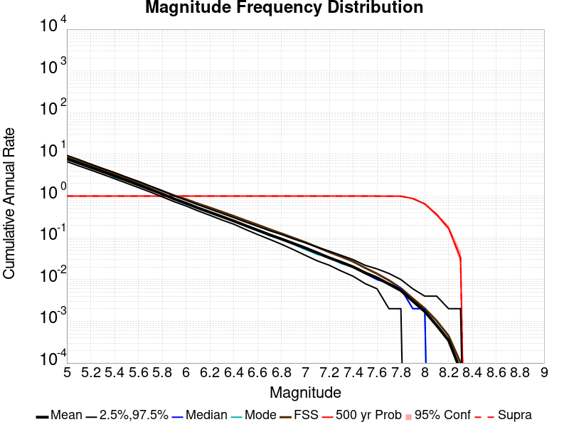
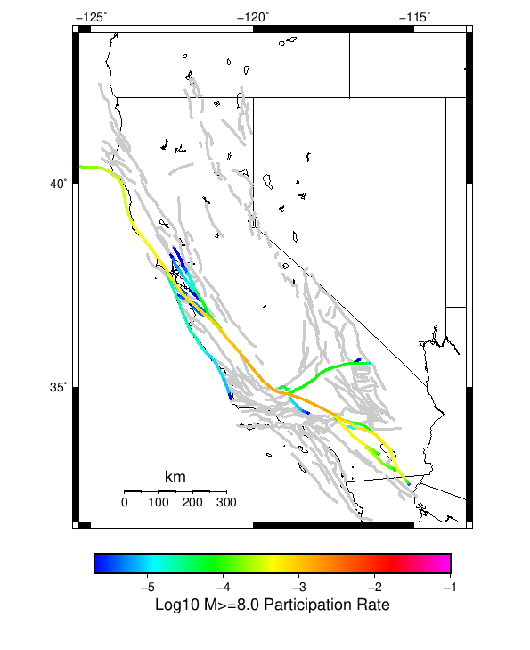
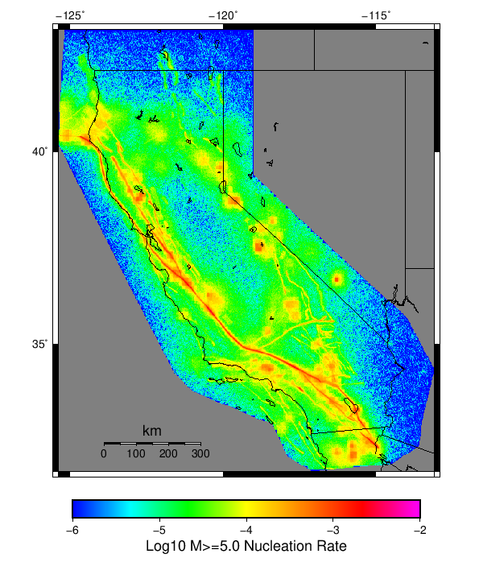

Start 2012, 500 yr, kCOV=1.16, Spontaneous, Historical Catalog Results
| Start 2012, 500 yr, kCOV=1.16, Spontaneous, Historical Catalog |
|---|
| Num Simulations | 647 (incomplete) |
| Start Time | 2012/01/01 00:00:00 UTC |
| Start Time Epoch Milliseconds | 1325376000000 |
| Duration | 500 Years |
| Includes Spontaneous? | true |
| Trigger Ruptures | (none) |
| Historical Ruptures | 60366 Trigger Ruptures |
| First: M7.3 at 1852/01/05 04:40:39 UTC |
| Last: M3.2 at 2011/12/31 19:14:44 UTC |
| Largest: M7.9 at 1857/01/09 16:25:39 UTC |
| Config Generated With | u3etas_config_builder.sh --start-year 2012 --num-simulations 1000 --duration-years 500 --include-spontaneous --historical-catalog --etas-k-cov 1.16 --hpc-site USC_HPC --nodes 36 --hours 24 --queue scec |
Table Of Contents
Magnitude Frequency Distribution
(top)
Legend
- Mean (thick black line): mean annual rate across all 647 catalogs
- 2.5%,97.5% (thin black lines): annual rate percentiles across all 647 catalogs
- Median (thin blue line): median annual rate across all 647 catalogs
- Mode (thin cyan line): modal annual rate across all 647 catalogs (scaled to annualized value)
- 500 yr Probability (thin red line): 500 year probability calculated as the fraction of catalogs with at least 1 occurrence
- 500 yr Supraseismogenic Probability (thin dashed red line): same as above, but only for supraseismogenic ruptures on explicitly modeled UCERF3 faults
- 95% Conf (light red shaded region): binomial 95% confidence bounds on probability

| Mag | Mean | 2.5 %ile | 97.5 %ile | Median | Mode | 500 yr Probability | 500 yr Supra-Seis Prob |
|---|
| M≥5 | 7.830 | 6.714 | 9.552 | 7.756 | 7.608 | 1.000 (100.00%) | 1.000 (100.00%) |
| M≥5.1 | 6.191 | 5.300 | 7.532 | 6.132 | 6.230 | 1.000 (100.00%) | 1.000 (100.00%) |
| M≥5.2 | 4.887 | 4.212 | 5.940 | 4.842 | 4.768 | 1.000 (100.00%) | 1.000 (100.00%) |
| M≥5.3 | 3.854 | 3.324 | 4.682 | 3.810 | 3.984 | 1.000 (100.00%) | 1.000 (100.00%) |
| M≥5.4 | 3.032 | 2.612 | 3.684 | 2.994 | 3.082 | 1.000 (100.00%) | 1.000 (100.00%) |
| M≥5.5 | 2.380 | 2.046 | 2.902 | 2.354 | 2.174 | 1.000 (100.00%) | 1.000 (100.00%) |
| M≥5.6 | 1.861 | 1.602 | 2.264 | 1.838 | 1.790 | 1.000 (100.00%) | 1.000 (100.00%) |
| M≥5.7 | 1.450 | 1.258 | 1.744 | 1.438 | 1.422 | 1.000 (100.00%) | 1.000 (100.00%) |
| M≥5.8 | 1.123 | 0.958 | 1.336 | 1.112 | 1.138 | 1.000 (100.00%) | 1.000 (100.00%) |
| M≥5.9 | 0.854 | 0.732 | 1.012 | 0.846 | 0.856 | 1.000 (100.00%) | 1.000 (100.00%) |
| M≥6 | 0.675 | 0.576 | 0.798 | 0.668 | 0.646 | 1.000 (100.00%) | 1.000 (100.00%) |
| M≥6.1 | 0.519 | 0.440 | 0.620 | 0.516 | 0.524 | 1.000 (100.00%) | 1.000 (100.00%) |
| M≥6.2 | 0.409 | 0.346 | 0.492 | 0.406 | 0.416 | 1.000 (100.00%) | 1.000 (100.00%) |
| M≥6.3 | 0.322 | 0.268 | 0.386 | 0.320 | 0.298 | 1.000 (100.00%) | 1.000 (100.00%) |
| M≥6.4 | 0.254 | 0.212 | 0.302 | 0.252 | 0.258 | 1.000 (100.00%) | 1.000 (100.00%) |
| M≥6.5 | 0.196 | 0.158 | 0.240 | 0.196 | 0.188 | 1.000 (100.00%) | 1.000 (100.00%) |
| M≥6.6 | 0.152 | 0.118 | 0.186 | 0.152 | 0.150 | 1.000 (100.00%) | 1.000 (100.00%) |
| M≥6.7 | 0.119 | 0.092 | 0.148 | 0.118 | 0.112 | 1.000 (100.00%) | 1.000 (100.00%) |
| M≥6.8 | 0.094 | 0.070 | 0.120 | 0.094 | 0.094 | 1.000 (100.00%) | 1.000 (100.00%) |
| M≥6.9 | 0.073 | 0.052 | 0.096 | 0.072 | 0.070 | 1.000 (100.00%) | 1.000 (100.00%) |
| M≥7 | 0.057 | 0.038 | 0.076 | 0.056 | 0.052 | 1.000 (100.00%) | 1.000 (100.00%) |
| M≥7.1 | 0.044 | 0.028 | 0.060 | 0.044 | 0.040 | 1.000 (100.00%) | 1.000 (100.00%) |
| M≥7.2 | 0.033 | 0.020 | 0.048 | 0.032 | 0.034 | 1.000 (100.00%) | 1.000 (100.00%) |
| M≥7.3 | 0.026 | 0.016 | 0.038 | 0.026 | 0.024 | 1.000 (100.00%) | 1.000 (100.00%) |
| M≥7.4 | 0.020 | 0.012 | 0.030 | 0.020 | 0.020 | 1.000 (100.00%) | 1.000 (100.00%) |
| M≥7.5 | 0.014 | 8.00E-3 | 0.022 | 0.014 | 0.014 | 1.000 (100.00%) | 1.000 (100.00%) |
| M≥7.6 | 0.011 | 6.00E-3 | 0.018 | 0.010 | 0.010 | 1.000 (100.00%) | 1.000 (100.00%) |
| M≥7.7 | 7.76E-3 | 4.00E-3 | 0.014 | 8.00E-3 | 8.00E-3 | 1.000 (100.00%) | 1.000 (100.00%) |
| M≥7.8 | 5.44E-3 | 2.00E-3 | 0.010 | 6.00E-3 | 6.00E-3 | 0.998 (99.85%) | 0.998 (99.85%) |
| M≥7.9 | 3.07E-3 | 0.000 | 6.00E-3 | 4.00E-3 | 2.00E-3 | 0.883 (88.25%) | 0.883 (88.25%) |
| M≥8 | 1.74E-3 | 0.000 | 4.00E-3 | 2.00E-3 | 2.00E-3 | 0.651 (65.07%) | 0.651 (65.07%) |
| M≥8.1 | 8.19E-4 | 0.000 | 4.00E-3 | 0.000 | 0.000 | 0.371 (37.09%) | 0.371 (37.09%) |
| M≥8.2 | 3.71E-4 | 0.000 | 2.00E-3 | 0.000 | 0.000 | 0.181 (18.08%) | 0.181 (18.08%) |
| M≥8.3 | 7.42E-5 | 0.000 | 2.00E-3 | 0.000 | 0.000 | 0.037 (3.71%) | 0.037 (3.71%) |
| M≥8.4 | 0.000 | 0.000 | 0.000 | 0.000 | 0.000 | 0.000 (0.00%) | 0.000 (0.00%) |
| M≥8.5 | 0.000 | 0.000 | 0.000 | 0.000 | 0.000 | 0.000 (0.00%) | 0.000 (0.00%) |
| M≥8.6 | 0.000 | 0.000 | 0.000 | 0.000 | 0.000 | 0.000 (0.00%) | 0.000 (0.00%) |
| M≥8.7 | 0.000 | 0.000 | 0.000 | 0.000 | 0.000 | 0.000 (0.00%) | 0.000 (0.00%) |
| M≥8.8 | 0.000 | 0.000 | 0.000 | 0.000 | 0.000 | 0.000 (0.00%) | 0.000 (0.00%) |
| M≥8.9 | 0.000 | 0.000 | 0.000 | 0.000 | 0.000 | 0.000 (0.00%) | 0.000 (0.00%) |
| M≥9 | 0.000 | 0.000 | 0.000 | 0.000 | 0.000 | 0.000 (0.00%) | 0.000 (0.00%) |
Long Term Rate Variability
(top)
162 Year Variability
(top)

Download CSV Here
| Magnitude | Mean | Median | Mode | Std. Dev. | 2.5 %-ile | 16 %-ile | 84 %-ile | 97.5 %-ile |
|---|
| 5.0 | 7.8329296 | 7.623457 | 7.685185 | 1.2238599 | 6.160494 | 6.7901235 | 8.833333 | 10.641975 |
| 5.1 | 6.1930914 | 6.0246916 | 5.376543 | 0.966397 | 4.8703704 | 5.376543 | 6.987654 | 8.37037 |
| 5.2 | 4.88928 | 4.765432 | 4.648148 | 0.7592574 | 3.8148148 | 4.2469134 | 5.512346 | 6.5987654 |
| 5.3 | 3.855369 | 3.7592592 | 3.7469137 | 0.5965057 | 3.006173 | 3.3333333 | 4.339506 | 5.2222223 |
| 5.4 | 3.0335896 | 2.9629629 | 2.851852 | 0.46542692 | 2.3580246 | 2.6358025 | 3.4074075 | 4.0925927 |
| 5.5 | 2.3805695 | 2.3271606 | 2.3271606 | 0.36316288 | 1.845679 | 2.0679011 | 2.6851852 | 3.2098765 |
| 5.6 | 1.8621972 | 1.8209877 | 1.8641975 | 0.28143537 | 1.4320987 | 1.6111112 | 2.0987654 | 2.5 |
| 5.7 | 1.4501657 | 1.425926 | 1.4197531 | 0.21396215 | 1.1111112 | 1.2592592 | 1.6296296 | 1.9320987 |
| 5.8 | 1.123619 | 1.1049383 | 1.0555556 | 0.16293314 | 0.8518519 | 0.97530866 | 1.2654321 | 1.4938271 |
| 5.9 | 0.85413206 | 0.845679 | 0.80864197 | 0.12346969 | 0.6419753 | 0.7407407 | 0.9691358 | 1.1234568 |
| 6.0 | 0.6753328 | 0.6666667 | 0.6481481 | 0.097791284 | 0.50617284 | 0.58641976 | 0.7654321 | 0.8888889 |
| 6.1 | 0.5191991 | 0.5123457 | 0.5123457 | 0.07819686 | 0.38271606 | 0.44444445 | 0.5925926 | 0.69135803 |
| 6.2 | 0.40968445 | 0.4074074 | 0.40123457 | 0.06356005 | 0.2962963 | 0.34567901 | 0.4691358 | 0.54320985 |
| 6.3 | 0.32282582 | 0.32098764 | 0.30246913 | 0.05241462 | 0.22839506 | 0.27160493 | 0.37654322 | 0.43209878 |
| 6.4 | 0.2539928 | 0.25308642 | 0.24691358 | 0.04422594 | 0.17283951 | 0.20987654 | 0.2962963 | 0.34567901 |
| 6.5 | 0.19648139 | 0.19753087 | 0.2037037 | 0.037369087 | 0.12962963 | 0.16049382 | 0.2345679 | 0.27160493 |
| 6.6 | 0.15260366 | 0.15432099 | 0.16049382 | 0.03112647 | 0.09259259 | 0.12345679 | 0.18518518 | 0.21604939 |
| 6.7 | 0.11863555 | 0.11728395 | 0.11728395 | 0.026945423 | 0.06790123 | 0.09259259 | 0.14197531 | 0.17283951 |
| 6.8 | 0.09369931 | 0.09259259 | 0.09876543 | 0.023335064 | 0.049382716 | 0.06790123 | 0.11728395 | 0.14197531 |
| 6.9 | 0.073244035 | 0.074074075 | 0.06790123 | 0.020441262 | 0.037037037 | 0.055555556 | 0.09259259 | 0.11728395 |
| 7.0 | 0.05695804 | 0.055555556 | 0.049382716 | 0.01784266 | 0.024691358 | 0.037037037 | 0.074074075 | 0.09259259 |
| 7.1 | 0.043454755 | 0.043209877 | 0.037037037 | 0.015356149 | 0.018518519 | 0.030864198 | 0.061728396 | 0.074074075 |
| 7.2 | 0.03305538 | 0.030864198 | 0.030864198 | 0.012960709 | 0.012345679 | 0.018518519 | 0.043209877 | 0.061728396 |
| 7.3 | 0.025969813 | 0.024691358 | 0.024691358 | 0.0109894825 | 0.0061728396 | 0.012345679 | 0.037037037 | 0.049382716 |
| 7.4 | 0.020006869 | 0.018518519 | 0.018518519 | 0.009341789 | 0.0061728396 | 0.012345679 | 0.030864198 | 0.043209877 |
| 7.5 | 0.014482798 | 0.012345679 | 0.012345679 | 0.0075955912 | 0.0 | 0.0061728396 | 0.024691358 | 0.030864198 |
| 7.6 | 0.010978177 | 0.012345679 | 0.0061728396 | 0.006389755 | 0.0 | 0.0061728396 | 0.018518519 | 0.024691358 |
| 7.7 | 0.00779476 | 0.0061728396 | 0.0061728396 | 0.005347667 | 0.0 | 0.0 | 0.012345679 | 0.018518519 |
| 7.8 | 0.0054636467 | 0.0061728396 | 0.0061728396 | 0.004439323 | 0.0 | 0.0 | 0.012345679 | 0.012345679 |
| 7.9 | 0.0030816493 | 0.0 | 0.0 | 0.003504375 | 0.0 | 0.0 | 0.0061728396 | 0.012345679 |
| 8.0 | 0.0017395895 | 0.0 | 0.0 | 0.002875059 | 0.0 | 0.0 | 0.0061728396 | 0.0061728396 |
| 8.1 | 8.2050107E-4 | 0.0 | 0.0 | 0.0021055036 | 0.0 | 0.0 | 0.0 | 0.0061728396 |
| 8.2 | 3.720877E-4 | 0.0 | 0.0 | 0.0014695241 | 0.0 | 0.0 | 0.0 | 0.0061728396 |
| 8.3 | 7.314544E-5 | 0.0 | 0.0 | 6.6812785E-4 | 0.0 | 0.0 | 0.0 | 0.0 |
| 8.4 | 0.0 | 0.0 | 0.0 | 0.0 | 0.0 | 0.0 | 0.0 | 0.0 |
| 8.5 | 0.0 | 0.0 | 0.0 | 0.0 | 0.0 | 0.0 | 0.0 | 0.0 |
| 8.6 | 0.0 | 0.0 | 0.0 | 0.0 | 0.0 | 0.0 | 0.0 | 0.0 |
| 8.7 | 0.0 | 0.0 | 0.0 | 0.0 | 0.0 | 0.0 | 0.0 | 0.0 |
| 8.8 | 0.0 | 0.0 | 0.0 | 0.0 | 0.0 | 0.0 | 0.0 | 0.0 |
| 8.9 | 0.0 | 0.0 | 0.0 | 0.0 | 0.0 | 0.0 | 0.0 | 0.0 |
| 9.0 | 0.0 | 0.0 | 0.0 | 0.0 | 0.0 | 0.0 | 0.0 | 0.0 |
80 Year Variability
(top)

Download CSV Here
| Magnitude | Mean | Median | Mode | Std. Dev. | 2.5 %-ile | 16 %-ile | 84 %-ile | 97.5 %-ile |
|---|
| 5.0 | 7.83266 | 7.5125 | 7.425 | 1.7407953 | 5.6625 | 6.4375 | 9.125 | 11.7625 |
| 5.1 | 6.1931577 | 5.9375 | 5.525 | 1.3746498 | 4.45 | 5.0875 | 7.225 | 9.275 |
| 5.2 | 4.8892 | 4.7 | 4.9875 | 1.0821261 | 3.4875 | 4.0125 | 5.7125 | 7.3125 |
| 5.3 | 3.8553452 | 3.7 | 3.4125 | 0.8523893 | 2.7375 | 3.15 | 4.5 | 5.75 |
| 5.4 | 3.0334299 | 2.925 | 2.775 | 0.6657825 | 2.1375 | 2.4875 | 3.5375 | 4.5125 |
| 5.5 | 2.3806124 | 2.3 | 2.175 | 0.5195552 | 1.6625 | 1.9375 | 2.775 | 3.5375 |
| 5.6 | 1.8624227 | 1.8 | 1.7375 | 0.40081814 | 1.2875 | 1.5125 | 2.175 | 2.7625 |
| 5.7 | 1.4503896 | 1.4125 | 1.3375 | 0.30576104 | 0.9875 | 1.1875 | 1.6875 | 2.1375 |
| 5.8 | 1.123976 | 1.1 | 1.125 | 0.23348124 | 0.7625 | 0.9125 | 1.325 | 1.6375 |
| 5.9 | 0.8544178 | 0.8375 | 0.775 | 0.17792277 | 0.5625 | 0.6875 | 1.0125 | 1.25 |
| 6.0 | 0.67558604 | 0.6625 | 0.6375 | 0.14051163 | 0.4375 | 0.55 | 0.8 | 0.9875 |
| 6.1 | 0.5193489 | 0.5125 | 0.525 | 0.11253696 | 0.325 | 0.4125 | 0.625 | 0.7625 |
| 6.2 | 0.40992078 | 0.4 | 0.425 | 0.09279857 | 0.25 | 0.325 | 0.5 | 0.6125 |
| 6.3 | 0.32310343 | 0.325 | 0.325 | 0.07738458 | 0.1875 | 0.25 | 0.4 | 0.4875 |
| 6.4 | 0.2542375 | 0.25 | 0.2375 | 0.06598164 | 0.1375 | 0.1875 | 0.3125 | 0.4 |
| 6.5 | 0.19665766 | 0.1875 | 0.1875 | 0.05611894 | 0.1 | 0.1375 | 0.25 | 0.3125 |
| 6.6 | 0.15276597 | 0.15 | 0.15 | 0.04707485 | 0.075 | 0.1125 | 0.2 | 0.25 |
| 6.7 | 0.11874678 | 0.1125 | 0.1 | 0.04051059 | 0.05 | 0.075 | 0.1625 | 0.2 |
| 6.8 | 0.09377254 | 0.0875 | 0.0875 | 0.035346504 | 0.0375 | 0.0625 | 0.125 | 0.1625 |
| 6.9 | 0.07328053 | 0.075 | 0.0625 | 0.03073447 | 0.025 | 0.0375 | 0.1 | 0.1375 |
| 7.0 | 0.05696806 | 0.05 | 0.05 | 0.026835848 | 0.0125 | 0.025 | 0.0875 | 0.1125 |
| 7.1 | 0.04345054 | 0.0375 | 0.0375 | 0.023155926 | 0.0 | 0.025 | 0.0625 | 0.0875 |
| 7.2 | 0.033053193 | 0.025 | 0.025 | 0.019675648 | 0.0 | 0.0125 | 0.05 | 0.075 |
| 7.3 | 0.025985317 | 0.025 | 0.025 | 0.016808972 | 0.0 | 0.0125 | 0.0375 | 0.0625 |
| 7.4 | 0.020002576 | 0.0125 | 0.0125 | 0.014460026 | 0.0 | 0.0 | 0.0375 | 0.05 |
| 7.5 | 0.014480294 | 0.0125 | 0.0125 | 0.012108281 | 0.0 | 0.0 | 0.025 | 0.0375 |
| 7.6 | 0.010976945 | 0.0125 | 0.0125 | 0.010323936 | 0.0 | 0.0 | 0.025 | 0.0375 |
| 7.7 | 0.007792375 | 0.0125 | 0.0 | 0.0086148465 | 0.0 | 0.0 | 0.0125 | 0.025 |
| 7.8 | 0.0054643224 | 0.0 | 0.0 | 0.007204307 | 0.0 | 0.0 | 0.0125 | 0.025 |
| 7.9 | 0.00308153 | 0.0 | 0.0 | 0.005586128 | 0.0 | 0.0 | 0.0125 | 0.0125 |
| 8.0 | 0.0017355744 | 0.0 | 0.0 | 0.0043507284 | 0.0 | 0.0 | 0.0 | 0.0125 |
| 8.1 | 8.275373E-4 | 0.0 | 0.0 | 0.0031083578 | 0.0 | 0.0 | 0.0 | 0.0125 |
| 8.2 | 3.735188E-4 | 0.0 | 0.0 | 0.0021285291 | 0.0 | 0.0 | 0.0 | 0.0125 |
| 8.3 | 7.405976E-5 | 0.0 | 0.0 | 9.594266E-4 | 0.0 | 0.0 | 0.0 | 0.0 |
| 8.4 | 0.0 | 0.0 | 0.0 | 0.0 | 0.0 | 0.0 | 0.0 | 0.0 |
| 8.5 | 0.0 | 0.0 | 0.0 | 0.0 | 0.0 | 0.0 | 0.0 | 0.0 |
| 8.6 | 0.0 | 0.0 | 0.0 | 0.0 | 0.0 | 0.0 | 0.0 | 0.0 |
| 8.7 | 0.0 | 0.0 | 0.0 | 0.0 | 0.0 | 0.0 | 0.0 | 0.0 |
| 8.8 | 0.0 | 0.0 | 0.0 | 0.0 | 0.0 | 0.0 | 0.0 | 0.0 |
| 8.9 | 0.0 | 0.0 | 0.0 | 0.0 | 0.0 | 0.0 | 0.0 | 0.0 |
| 9.0 | 0.0 | 0.0 | 0.0 | 0.0 | 0.0 | 0.0 | 0.0 | 0.0 |
28 Year Variability
(top)

Download CSV Here
| Magnitude | Mean | Median | Mode | Std. Dev. | 2.5 %-ile | 16 %-ile | 84 %-ile | 97.5 %-ile |
|---|
| 5.0 | 7.8334556 | 7.178571 | 6.964286 | 2.8171122 | 4.964286 | 5.857143 | 9.571428 | 14.642858 |
| 5.1 | 6.1932673 | 5.714286 | 5.178571 | 2.2260518 | 3.857143 | 4.607143 | 7.571429 | 11.571428 |
| 5.2 | 4.8891134 | 4.5 | 3.8214285 | 1.7502631 | 3.0 | 3.642857 | 6.0 | 9.035714 |
| 5.3 | 3.8551588 | 3.5714285 | 3.392857 | 1.3788699 | 2.3214285 | 2.8214285 | 4.75 | 7.107143 |
| 5.4 | 3.0333147 | 2.8214285 | 2.75 | 1.0813241 | 1.7857143 | 2.2142856 | 3.75 | 5.571429 |
| 5.5 | 2.3806353 | 2.2142856 | 2.0357144 | 0.8454437 | 1.3571428 | 1.7142857 | 2.9642856 | 4.357143 |
| 5.6 | 1.8623284 | 1.75 | 1.6428572 | 0.6559523 | 1.0357143 | 1.3571428 | 2.3214285 | 3.392857 |
| 5.7 | 1.4500669 | 1.3571428 | 1.3214285 | 0.5029558 | 0.78571427 | 1.0357143 | 1.8214285 | 2.5714285 |
| 5.8 | 1.1237353 | 1.0714285 | 1.0 | 0.38699806 | 0.5714286 | 0.78571427 | 1.4285715 | 2.0 |
| 5.9 | 0.8543731 | 0.8214286 | 0.78571427 | 0.29668915 | 0.42857143 | 0.60714287 | 1.1071428 | 1.5357143 |
| 6.0 | 0.67547697 | 0.64285713 | 0.64285713 | 0.23552959 | 0.32142857 | 0.4642857 | 0.89285713 | 1.2142857 |
| 6.1 | 0.51927775 | 0.5 | 0.4642857 | 0.18897252 | 0.21428572 | 0.35714287 | 0.6785714 | 0.96428573 |
| 6.2 | 0.40982622 | 0.39285713 | 0.35714287 | 0.1565149 | 0.14285715 | 0.25 | 0.5714286 | 0.75 |
| 6.3 | 0.32299688 | 0.32142857 | 0.2857143 | 0.1309452 | 0.10714286 | 0.21428572 | 0.4642857 | 0.60714287 |
| 6.4 | 0.25411075 | 0.25 | 0.25 | 0.11156657 | 0.071428575 | 0.14285715 | 0.35714287 | 0.5 |
| 6.5 | 0.19650488 | 0.17857143 | 0.17857143 | 0.09497329 | 0.035714287 | 0.10714286 | 0.2857143 | 0.39285713 |
| 6.6 | 0.15266973 | 0.14285715 | 0.10714286 | 0.08100138 | 0.035714287 | 0.071428575 | 0.21428572 | 0.32142857 |
| 6.7 | 0.11870884 | 0.10714286 | 0.10714286 | 0.07057959 | 0.0 | 0.035714287 | 0.17857143 | 0.2857143 |
| 6.8 | 0.0937293 | 0.071428575 | 0.071428575 | 0.06206997 | 0.0 | 0.035714287 | 0.14285715 | 0.25 |
| 6.9 | 0.073227435 | 0.071428575 | 0.035714287 | 0.054155577 | 0.0 | 0.035714287 | 0.10714286 | 0.21428572 |
| 7.0 | 0.056975957 | 0.035714287 | 0.035714287 | 0.047254518 | 0.0 | 0.0 | 0.10714286 | 0.17857143 |
| 7.1 | 0.04344226 | 0.035714287 | 0.035714287 | 0.041108336 | 0.0 | 0.0 | 0.071428575 | 0.14285715 |
| 7.2 | 0.033038717 | 0.035714287 | 0.0 | 0.035267036 | 0.0 | 0.0 | 0.071428575 | 0.10714286 |
| 7.3 | 0.025976388 | 0.035714287 | 0.0 | 0.0306068 | 0.0 | 0.0 | 0.035714287 | 0.10714286 |
| 7.4 | 0.020005066 | 0.0 | 0.0 | 0.026549984 | 0.0 | 0.0 | 0.035714287 | 0.071428575 |
| 7.5 | 0.014472095 | 0.0 | 0.0 | 0.022359965 | 0.0 | 0.0 | 0.035714287 | 0.071428575 |
| 7.6 | 0.010981518 | 0.0 | 0.0 | 0.019228734 | 0.0 | 0.0 | 0.035714287 | 0.071428575 |
| 7.7 | 0.0077994103 | 0.0 | 0.0 | 0.016151862 | 0.0 | 0.0 | 0.035714287 | 0.035714287 |
| 7.8 | 0.0054712766 | 0.0 | 0.0 | 0.013402688 | 0.0 | 0.0 | 0.0 | 0.035714287 |
| 7.9 | 0.003087943 | 0.0 | 0.0 | 0.010129811 | 0.0 | 0.0 | 0.0 | 0.035714287 |
| 8.0 | 0.0017339239 | 0.0 | 0.0 | 0.0077064014 | 0.0 | 0.0 | 0.0 | 0.035714287 |
| 8.1 | 8.2799734E-4 | 0.0 | 0.0 | 0.005374791 | 0.0 | 0.0 | 0.0 | 0.0 |
| 8.2 | 3.7341056E-4 | 0.0 | 0.0 | 0.0036328854 | 0.0 | 0.0 | 0.0 | 0.0 |
| 8.3 | 7.143507E-5 | 0.0 | 0.0 | 0.0015957383 | 0.0 | 0.0 | 0.0 | 0.0 |
| 8.4 | 0.0 | 0.0 | 0.0 | 0.0 | 0.0 | 0.0 | 0.0 | 0.0 |
| 8.5 | 0.0 | 0.0 | 0.0 | 0.0 | 0.0 | 0.0 | 0.0 | 0.0 |
| 8.6 | 0.0 | 0.0 | 0.0 | 0.0 | 0.0 | 0.0 | 0.0 | 0.0 |
| 8.7 | 0.0 | 0.0 | 0.0 | 0.0 | 0.0 | 0.0 | 0.0 | 0.0 |
| 8.8 | 0.0 | 0.0 | 0.0 | 0.0 | 0.0 | 0.0 | 0.0 | 0.0 |
| 8.9 | 0.0 | 0.0 | 0.0 | 0.0 | 0.0 | 0.0 | 0.0 | 0.0 |
| 9.0 | 0.0 | 0.0 | 0.0 | 0.0 | 0.0 | 0.0 | 0.0 | 0.0 |
Variability Duration Dependence
(top)

Download CSV Here
| Duration (years) | Mean | Median | Mode | Std. Dev. | 2.5 %-ile | 16 %-ile | 84 %-ile | 97.5 %-ile |
|---|
| 1.0 | 7.8297033 | 6.0 | 5.0 | 11.440693 | 1.0 | 3.0 | 11.0 | 25.0 |
| 4.0 | 7.8297033 | 6.5 | 5.75 | 6.529515 | 3.0 | 4.5 | 10.0 | 21.0 |
| 8.0 | 7.831496 | 6.75 | 5.625 | 4.889901 | 3.875 | 5.0 | 9.875 | 18.625 |
| 12.0 | 7.831838 | 6.9166665 | 6.4166665 | 4.1184278 | 4.25 | 5.3333335 | 9.833333 | 17.166666 |
| 16.0 | 7.831496 | 7.0 | 6.0625 | 3.6442103 | 4.5 | 5.5 | 9.75 | 16.25 |
| 20.0 | 7.8297033 | 7.1 | 6.5 | 3.2915056 | 4.7 | 5.65 | 9.7 | 15.5 |
| 24.0 | 7.83266 | 7.1666665 | 6.2916665 | 3.068171 | 4.8333335 | 5.75 | 9.625 | 14.875 |
| 28.0 | 7.8334556 | 7.178571 | 6.964286 | 2.8171122 | 4.964286 | 5.857143 | 9.571428 | 14.642858 |
| 32.0 | 7.83266 | 7.21875 | 6.59375 | 2.6995773 | 5.03125 | 5.90625 | 9.5 | 14.21875 |
| 36.0 | 7.827732 | 7.2777777 | 6.9166665 | 2.5243874 | 5.111111 | 5.9722223 | 9.444445 | 13.888889 |
| 40.0 | 7.83266 | 7.3 | 6.25 | 2.4145002 | 5.225 | 6.05 | 9.4 | 13.575 |
| 44.0 | 7.831658 | 7.340909 | 6.75 | 2.3160026 | 5.2954545 | 6.090909 | 9.409091 | 13.340909 |
| 48.0 | 7.83266 | 7.375 | 6.7916665 | 2.2259233 | 5.3333335 | 6.1666665 | 9.3125 | 13.25 |
| 52.0 | 7.827732 | 7.3653846 | 6.769231 | 2.1298244 | 5.3653846 | 6.2115383 | 9.307693 | 12.826923 |
| 56.0 | 7.8332067 | 7.428571 | 6.928571 | 2.0673707 | 5.482143 | 6.232143 | 9.267858 | 12.660714 |
| 60.0 | 7.83266 | 7.4166665 | 7.266667 | 1.994616 | 5.4666667 | 6.3 | 9.216666 | 12.483334 |
| 64.0 | 7.8332067 | 7.4375 | 6.703125 | 1.9566231 | 5.53125 | 6.296875 | 9.203125 | 12.40625 |
| 68.0 | 7.8334556 | 7.4558825 | 6.9852943 | 1.8720596 | 5.5735292 | 6.352941 | 9.220589 | 12.294118 |
| 72.0 | 7.842832 | 7.4583335 | 7.2777777 | 1.8472366 | 5.625 | 6.388889 | 9.152778 | 12.138889 |
| 76.0 | 7.8268085 | 7.4736843 | 6.4078946 | 1.7630936 | 5.644737 | 6.4210525 | 9.144737 | 11.960526 |
| 80.0 | 7.83266 | 7.5125 | 7.425 | 1.7407953 | 5.6625 | 6.4375 | 9.125 | 11.7625 |
| 84.0 | 7.8523664 | 7.5238094 | 7.202381 | 1.7344267 | 5.6904764 | 6.464286 | 9.107142 | 12.035714 |
| 88.0 | 7.8373895 | 7.5227275 | 7.159091 | 1.6995201 | 5.7045455 | 6.4886365 | 9.113636 | 11.613636 |
| 92.0 | 7.8270345 | 7.5108695 | 7.2826085 | 1.6608976 | 5.7608695 | 6.521739 | 9.065217 | 11.597826 |
| 96.0 | 7.83266 | 7.5208335 | 7.1458335 | 1.6066391 | 5.78125 | 6.5625 | 9.020833 | 11.489583 |
| 100.0 | 7.8297033 | 7.5 | 7.26 | 1.5547252 | 5.82 | 6.58 | 9.01 | 11.52 |
| 200.0 | 7.856055 | 7.69 | 7.91 | 1.124825 | 6.275 | 6.91 | 8.75 | 10.35 |
| 300.0 | 7.9012623 | 7.77 | 7.6233335 | 0.97084916 | 6.56 | 7.07 | 8.626667 | 9.916667 |
| 400.0 | 7.856055 | 7.7525 | 8.065 | 0.8256085 | 6.615 | 7.1425 | 8.475 | 9.7825 |
| 500.0 | 7.8297033 | 7.756 | 7.608 | 0.74017745 | 6.714 | 7.174 | 8.406 | 9.552 |
Simulation Stationarity
(top)

Section Participation
(top)
Section Participation Plots
(top)
| Min Mag | Complete Catalog (including spontaneous) |
|---|
| All Supra. Seis. | |
| M≥6.5 |  |
| M≥7 |  |
| M≥7.5 |  |
| M≥8 |  |
Supra-Seismogenic Parent Sections Table
(top)
First 10 of 313 with matching ruptures shown
| Parent Name | Total Mean Annual Rate | Total 500 Year Prob |
|---|
| San Andreas (Parkfield) | 0.042457495 | 1.0 |
| San Andreas (Creeping Section) 2011 CFM | 0.028661516 | 1.0 |
| San Andreas (Mojave S) | 0.018460587 | 1.0 |
| Mendocino | 0.018092737 | 1.0 |
| Cerro Prieto | 0.013319938 | 1.0 |
| Imperial | 0.011647604 | 1.0 |
| Brawley (Seismic Zone) alt 1 | 0.010846986 | 1.0 |
| Hayward (So) 2011 CFM | 0.009650695 | 1.0 |
| San Andreas (Offshore) 2011 CFM | 0.008392581 | 1.0 |
| Elsinore (Glen Ivy) rev | 0.007913447 | 0.9938176 |
M≥6.5 Parent Sections Table
(top)
First 10 of 304 with matching ruptures shown
| Parent Name | Total Mean Annual Rate | Total 500 Year Prob |
|---|
| Cerro Prieto | 0.011536322 | 1.0 |
| San Andreas (Creeping Section) 2011 CFM | 0.01111592 | 1.0 |
| Mendocino | 0.009227202 | 1.0 |
| Imperial | 0.008185471 | 0.9984544 |
| Hayward (So) 2011 CFM | 0.008151468 | 1.0 |
| Brawley (Seismic Zone) alt 1 | 0.0078176195 | 1.0 |
| San Andreas (Mojave S) | 0.007035549 | 1.0 |
| San Andreas (Santa Cruz Mts) 2011 CFM | 0.0069088098 | 0.9984544 |
| San Andreas (San Bernardino N) | 0.006581144 | 0.9969088 |
| San Andreas (Cholame) rev | 0.006108192 | 1.0 |
M≥7 Parent Sections Table
(top)
First 10 of 269 with matching ruptures shown
| Parent Name | Total Mean Annual Rate | Total 500 Year Prob |
|---|
| San Andreas (Creeping Section) 2011 CFM | 0.0069149924 | 0.9938176 |
| San Andreas (Carrizo) rev | 0.0058608963 | 1.0 |
| San Andreas (Cholame) rev | 0.00574034 | 1.0 |
| San Andreas (Santa Cruz Mts) 2011 CFM | 0.0054064915 | 0.98918086 |
| San Andreas (Mojave S) | 0.0053446675 | 0.9969088 |
| San Andreas (Mojave N) | 0.0049644513 | 0.9969088 |
| San Andreas (Big Bend) | 0.0046275114 | 0.9969088 |
| San Andreas (San Bernardino N) | 0.004599691 | 0.98918086 |
| San Andreas (North Coast) 2011 CFM | 0.0045595053 | 0.9969088 |
| San Andreas (Coachella) rev | 0.0043493044 | 0.9907264 |
M≥7.5 Parent Sections Table
(top)
First 10 of 200 with matching ruptures shown
| Parent Name | Total Mean Annual Rate | Total 500 Year Prob |
|---|
| San Andreas (Mojave N) | 0.00483153 | 0.9969088 |
| San Andreas (Big Bend) | 0.00449459 | 0.9969088 |
| San Andreas (Mojave S) | 0.004451314 | 0.98918086 |
| San Andreas (Carrizo) rev | 0.0042380216 | 0.99536324 |
| San Andreas (Cholame) rev | 0.0040247296 | 0.98763525 |
| San Andreas (North Coast) 2011 CFM | 0.0037001546 | 0.9799073 |
| San Andreas (San Bernardino N) | 0.003675425 | 0.95054096 |
| San Andreas (Creeping Section) 2011 CFM | 0.0035208655 | 0.91344666 |
| San Andreas (Peninsula) 2011 CFM | 0.003054096 | 0.9412674 |
| San Andreas (Parkfield) | 0.0030324575 | 0.89489955 |
M≥8 Parent Sections Table
(top)
First 10 of 57 with matching ruptures shown
| Parent Name | Total Mean Annual Rate | Total 500 Year Prob |
|---|
| San Andreas (Mojave N) | 0.001595054 | 0.625966 |
| San Andreas (Mojave S) | 0.0015672334 | 0.6213292 |
| San Andreas (Big Bend) | 0.0015301391 | 0.6058733 |
| San Andreas (Carrizo) rev | 0.001527048 | 0.6058733 |
| San Andreas (Cholame) rev | 0.0015054096 | 0.60123646 |
| San Andreas (San Bernardino N) | 0.0014652241 | 0.5981453 |
| San Andreas (Parkfield) | 0.0012581144 | 0.51931995 |
| San Andreas (Creeping Section) 2011 CFM | 0.0012086553 | 0.496136 |
| San Andreas (Santa Cruz Mts) 2011 CFM | 8.531685E-4 | 0.3802164 |
| San Andreas (Peninsula) 2011 CFM | 7.5734156E-4 | 0.3477589 |
Gridded Nucleation
(top)
| Min Mag | Complete Catalog (including spontaneous) |
|---|
| M≥5 |  |
| M≥6 |  |
| M≥7 |  |
(top)
{
"numSimulations": 1000,
"duration": 500.0,
"startYear": 2012,
"includeSpontaneous": true,
"randomSeed": 1571166429978,
"binaryOutput": true,
"binaryOutputFilters": [
{
"prefix": "results_complete",
"descendantsOnly": false
},
{
"prefix": "results_m5_preserve_chain",
"minMag": 5.0,
"preserveChainBelowMag": true,
"descendantsOnly": false
}
],
"forceRecalc": false,
"simulationName": "Start 2012, 500 yr, kCOV\u003d1.16, Spontaneous, Historical Catalog",
"numRetries": 3,
"outputDir": "${ETAS_SIM_DIR}/2019_10_15-Start2012_500yr_kCOV1p16_Spontaneous_HistoricalCatalog",
"triggerCatalog": "${ETAS_LAUNCHER}/inputs/u3_historical_catalog.txt",
"triggerCatalogSurfaceMappings": "${ETAS_LAUNCHER}/inputs/u3_historical_catalog_finite_fault_mappings.xml",
"treatTriggerCatalogAsSpontaneous": true,
"cacheDir": "${ETAS_LAUNCHER}/inputs/cache_fm3p1_ba",
"fssFile": "${ETAS_LAUNCHER}/inputs/2013_05_10-ucerf3p3-production-10runs_COMPOUND_SOL_FM3_1_SpatSeisU3_MEAN_BRANCH_AVG_SOL.zip",
"probModel": "FULL_TD",
"applySubSeisForSupraNucl": true,
"totRateScaleFactor": 1.14,
"gridSeisCorr": true,
"timeIndependentERF": false,
"griddedOnly": false,
"imposeGR": false,
"includeIndirectTriggering": true,
"gridSeisDiscr": 0.1,
"catalogCompletenessModel": "RELAXED",
"etas_k_cov": 1.16,
"configCommand": "u3etas_config_builder.sh --start-year 2012 --num-simulations 1000 --duration-years 500 --include-spontaneous --historical-catalog --etas-k-cov 1.16 --hpc-site USC_HPC --nodes 36 --hours 24 --queue scec",
"configTime": 1571166429978
}